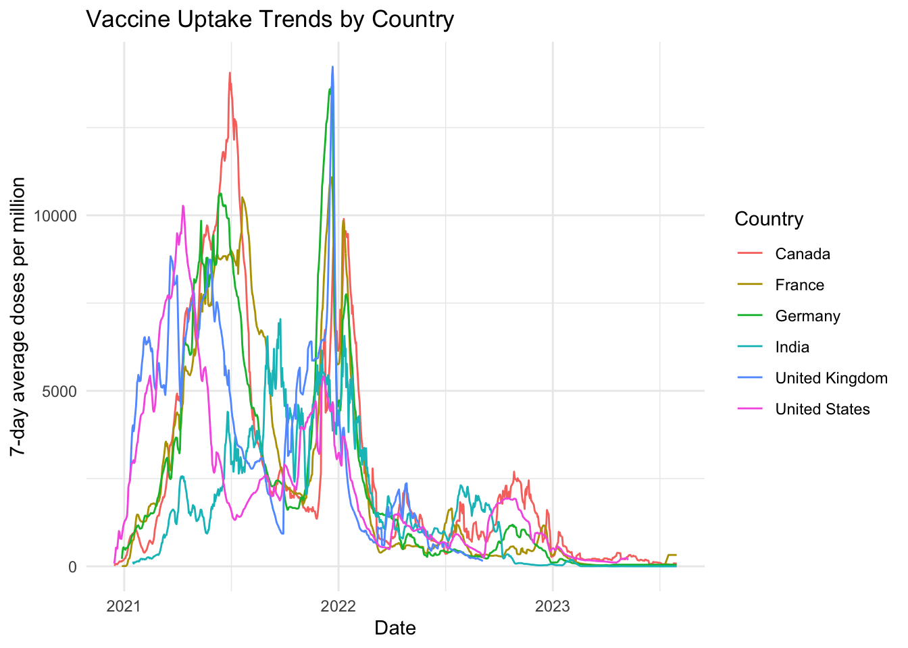
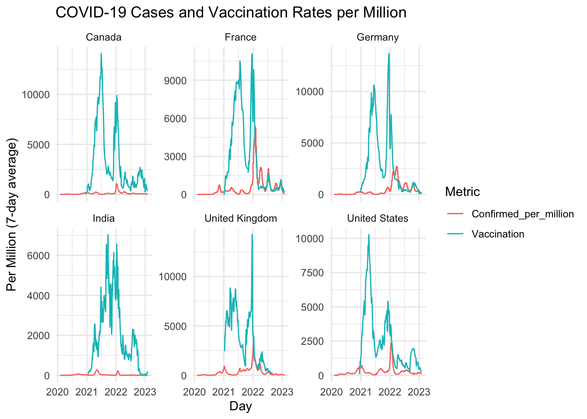
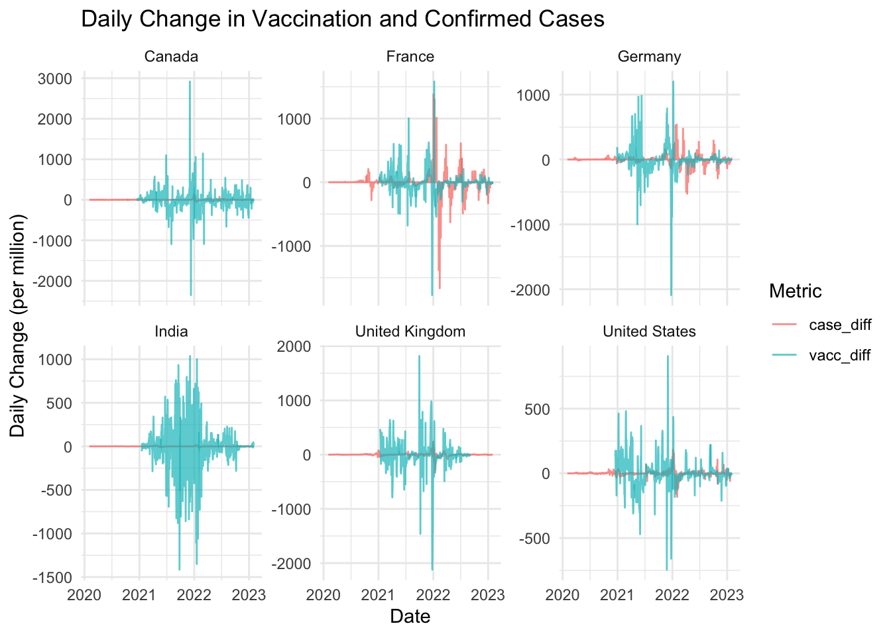
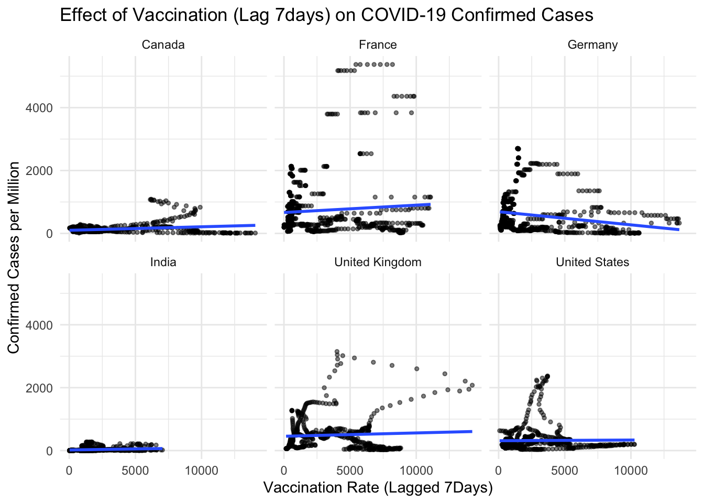
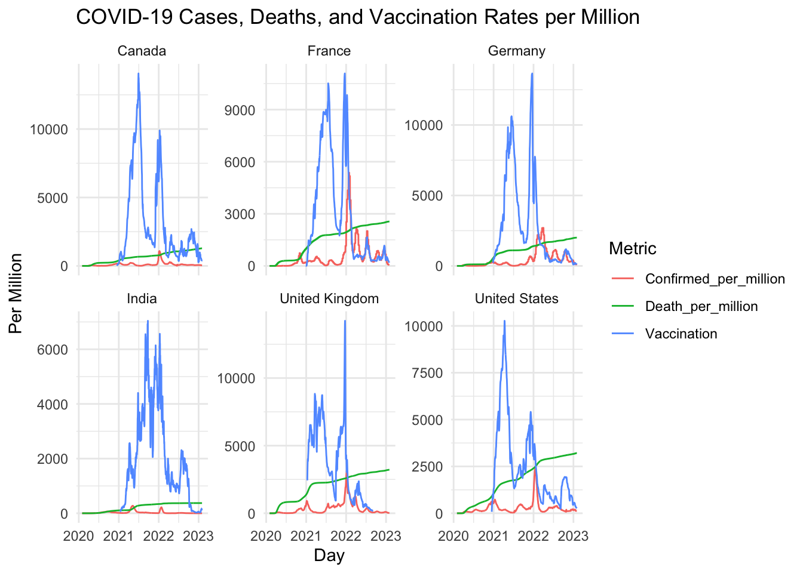

Assignment3 - Covid19: vaccination rates, case numbers, and death rates compare across France, Canada, Germany, India, the UK, and the US
Executive Summary
This report details a study of COVID-19 confirmed cases, deaths, and vaccination rates across Canada, France, Germany, India, the UK, and the US from February 2020 to July 2023. It shows the impact of vaccination on pandemic outcomes. Studies state that countries, including the US and UK, saw a decrease in both cases and deaths when vaccination uptake began at the onset of the pandemic. This analysis shows how vaccination has a proportionately large effect relative to decreasing pandemic numbers.
Introduction
Since early 2020, countries around the globe have experienced COVID-19 to different extents. Governments responded with measures like testing, lockdowns, and mass vaccination, but the outcomes varied significantly. This study compares Canada, France, Germany, India, the UK, and the US to understand the contrast in outcomes. It researches time series data on confirmed cases, deaths, and vaccination rates from 2020 to 2023. The primary question focuses on the role of vaccination in decreasing case numbers and mortality rates. Vaccination programs started at varying times, with richer nations beginning earlier. For example, Canada and the United States started vaccinations in December 2020, while India began in January 2021. This study aims to provide insight into successful responses to the pandemic. It highlights the importance of vaccination in reducing the spread and severity of the virus.
Methodology
Data Source:
We used publicly available datasets from Our World in Data, including:
Confirmed COVID-19 case numbers: https://ourworldindata.org/covid-cases
COVID-19 death data: https://ourworldindata.org/covid-deaths
COVID-19 vaccination data: https://ourworldindata.org/covid-vaccinations
Time Range Validation:
Confirmed Cases: February 1, 2020 - February 1, 2023
Death Rates: February 1, 2020 - February 1, 2023
Vaccination Data:
The vaccination dataset was obtained from Our World in Data. We observed that different countries had different vaccination start and end dates. For example, Canada and the US began recording vaccinations in December 2020, while India started in mid-January 2021. These differences are likely due to unequal access to vaccines and different national data reporting schedules.
To ensure fair comparisons, we limited our analysis to the overlapping period across all six countries: from January 16, 2021 to September 4, 2022. This allows for consistent visualization and avoids bias caused by missing early or late-stage data in certain countries.
Data Cleaning and Preprocessing:
Before analysis, we checked for missing values in the vaccination dataset. We removed any records with missing doses per million using R’s filter(!is.na(...)) function.
We then merged the confirmed case dataset with the vaccination dataset by country and date. To ensure valid comparisons across countries, we filtered the merged dataset to include only the common time range where all countries had vaccination data available.
| Country | Start | End |
|---|---|---|
| Canada | 2020-12-15 | 2023-07-31 |
| France | 2020-12-28 | 2023-07-31 |
| Germany | 2020-12-28 | 2023-07-31 |
| India | 2021-01-16 | 2023-07-31 |
| United Kingdom | 2021-01-11 | 2022-09-04 |
| United States | 2020-12-15 | 2023-05-09 |
Figure 1 shows the 7-day average vaccination doses per million across the six countries. Canada, France, Germany, the UK, and the US all ramped up vaccination rapidly during early 2021, while India lagged slightly behind, with a noticeable delay in rollout. Table 1 confirms the start and end dates of vaccine data coverage, showing that most countries began vaccination efforts in late December 2020. This aligns with Our World in Data’s findings that vaccine rollout was uneven globally, with lower coverage in lower-income regions.

In order to more clearly understand the temporal relationship between COVID-19 outbreaks and vaccination, we constructed the Figure 2, which displays the number of daily diagnoses per million people overlaid on the number of vaccinations, arranged faceted by country. We can see that the number of confirmed cases increased before the vaccination rate started to rise. This means that many governments began to roll out vaccines after the number of cases went up. This figure is useful for visualizing the timing between outbreaks and vaccination responses. It helps us see whether vaccines were given early or late during a wave.

Figure 3 highlights the daily change in confirmed cases and vaccinations. It shows how much each number went up or down each day. We can see during major outbreaks, the daily changes were large. There were big increases in confirmed cases, and then some countries also had big jumps in vaccination. This figure helps us understand how fast things changed. It also shows how quickly some countries reacted when cases increased.

To understand if vaccines helped reduce new COVID-19 cases, we looked at vaccination rates with a 7-day lag. This means we checked if higher vaccination numbers one week earlier were linked to fewer new cases later. The Figure 4 shows that in countries like the US and UK, when more people were vaccinated, new case numbers often went down after a few days. This suggests that vaccines helped slow the spread of the virus.
However, as Our World in Data points out, vaccines became less effective in stopping infections over time, especially when new variants appeared. Even so, they still helped reduce the number of serious cases and deaths.

Figure 5 compares the trends of confirmed cases, death rates, and vaccination rates across six countries. Earlier waves—before widespread vaccination—showed a much closer link between cases and deaths.
This pattern suggests that vaccination programs, alongside other public health measures, played a key role in reducing the severity of outcomes even when infection levels remained high.
The trend is less clear in countries with shorter or later vaccination coverage, such as India, possibly due to data gaps or other healthcare constraints.
We found that countries with early and wide vaccination had better control of the virus. In these places, case numbers went down after people started getting vaccinated. Later waves of COVID-19 caused fewer deaths than early ones. This shows that vaccines helped not only to stop the spread, but also to stop people from dying. Vaccination made a big difference.
Results
The daily changes in COVID-19 case and vaccination rates in Figure 3 shows that large outbreaks triggered spikes in vaccination, indicating reactive public health responses. Similarly, Figure 2, shows that vaccines were often given after case numbers had already started rising.
In early stages of the pandemic, before vaccination were widely available, the number of deaths closely followed the number of confirmed cases. However, as vaccination rates increased, the gap between cases and deaths widened, suggesting that vaccines helped reduce the severity of outcomes as per Figure 5 illustrates trends in confirmed COVID-19 cases, deaths, and vaccination rates per million across six countries.
In countries like the United States and United Kingdom, higher vaccination rates were often followed by declines in new case numbers. This is also shown in Figure 4, which used a 7-day delay to study the effect of vaccines. It suggests vaccines helped slow down the spread of the virus soon after rollout.
The overall findings show that vaccination contributed to lower death rates and reduced the impact of major outbreaks when implemented early.
Discussion
- Case rates depend heavily on how much testing was available and how consistently it was used. Some countries, particularly in early stages of the pandemic, had limited testing capacity, meaning many infections may have gone unrecorded. In contrast, countries with widespread and frequent testing likely reported more cases, even among people with mild or no symptoms.
- The differences in how countries report COVID-19 deaths may affect the accuracy of comparisons. For example, some countries may only rec
Conclusion
During the project, we analyzed numbers of confirmed cases, deaths and vaccinations in Canada, France, Germany, India, the UK and the US.
Our findings highlight three key observations:
In most countries, the number of cases increased quite a bit before widespread vaccination took place.
During major outbreaks, both case numbers and vaccine doses administered showed significant daily fluctuations.
A 7-day lag analysis indicated that rising vaccination rates were followed by a reduction in new case numbers. Areas where vaccination started early and was kept up showed the strongest impact.
These insights suggest that timely and sustained vaccination campaigns played a crucial role in reducing transmission and saving lives. Future public health responses should prioritize early vaccine deployment during pandemics.
Recommendations
Given the findings, we suggest that further pandemic responses concentrate on spreading vaccinations quickly, especially in lower-income parts of the world like India, in order to reduce chances for breaks in case numbers. As seen in Figure 3, rather than waiting for a surge, Governments should consider establishing proactive vaccination schemes, ensuring vaccines are deployed before a high number of cases occur. Having comparable ways of reporting data in different nations allows for better assessment and guides effective policy creation. Finally such campaigns need to make sure vaccination efforts continue, because sustained work in the US and UK greatly reduced the number of people affected and the death rate, as shown in Figure 5.